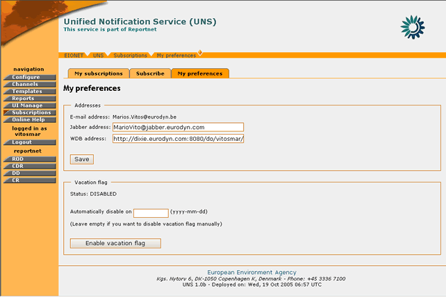
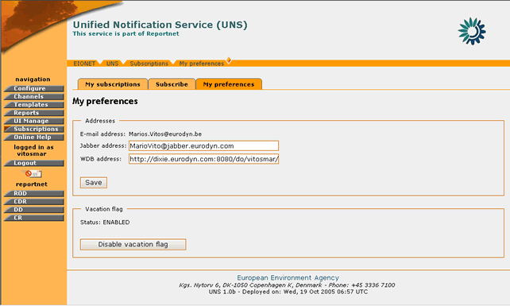
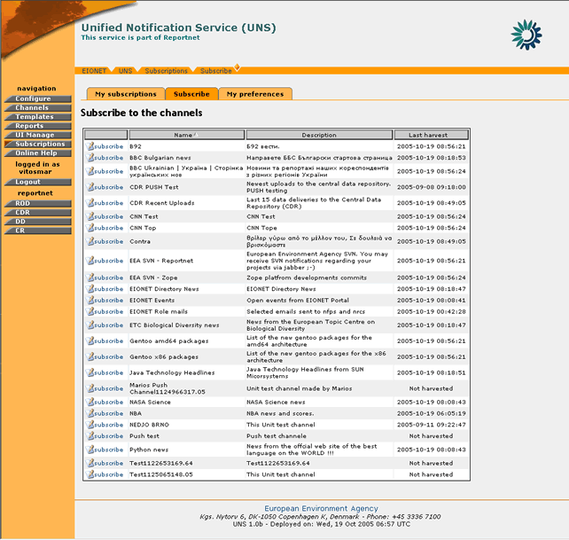
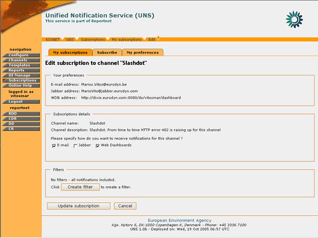
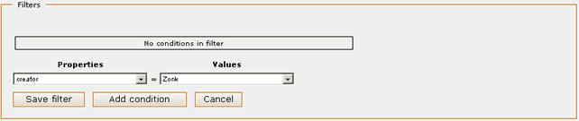
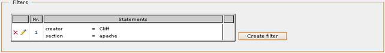
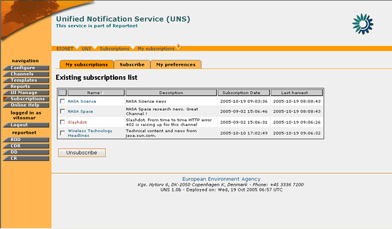
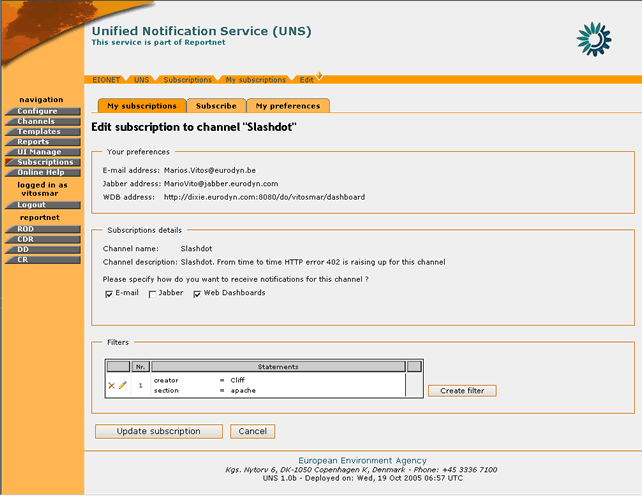
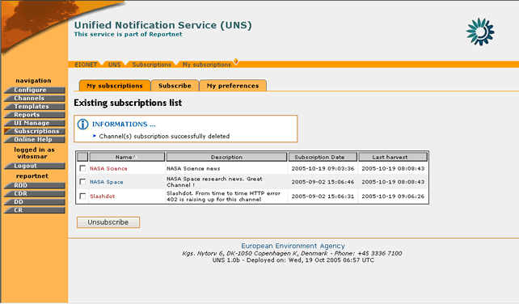

5. UNS User FEATURES
5.1 General Principles
The user module section describes the set of UNS operations and functions which are available to simple non-administrator users. This set of functions allows REPORTNET users to manage their notification profile information. More precisely, it allows registered users to specify what type of notifications they would like to receive and how they like to receive it.
This set of functions is comprised of the following:
- Subscribe to an event channel
- Unsubscribe from an event channel
- Edit Subscription
5.2 Notification Profile Management
5.2.1 Setting Notification Preferences and Vacation Flag
The notification preferences of any Reportnet user can be set by logging-in the UNS and accessing the “My preferences” tab.
From this page, the user may define the delivery addresses of the messages destined for the Web Dashboards and Jabber services. In addition, the user may enable or disable the vacation flag.
5.2.1.1 Setting delivery addresses
In order for each user to set the delivery addresses for the Jabber and WDB services, the following steps must be followed:
STEP 1 – Login
If you are not already logged in, see section 3 (Authenticate User Account).
STEP 2 – Click on the “Subscriptions” button on the navigation bar.
By selecting the “Subscriptions” the user should select the “My Preferences” tab
STEP 3 – Enter/Edit a Jabber or WDB address for the delivery of the UNS notification messages.
Important Note: The user must also enter a valid Jabber account as well as a Web Dashboards address in order for the corresponding notifications to be delivered. Web Dashboards user address is the one that appears on the Internet browsers address bar when the user access to his/her dashboard at the Web Dashboards Web site. The e-mail address of the user cannot be changed and corresponds to the one defined in the EEA LDAP server. In case an invalid Jabber account or WDB address is inserted, the UNS will return the appropriate error message.
STEP 4 – Press “Save”

Figure 34: UNS - My Preferences page
So, in summary:
Step |
Setting Delivery Addresses |
1 |
Login |
2 |
Click on “Subscriptions” button |
3 |
Enter Jabber/WDB addresses |
4 |
Save |
5.2.1.2 Vacation Flag
In cases that a user is away for a long period of time, he/she has the ability to enable a vacation flag notifying the UNS to stop sending notifications for a defined amount of time. In order to manage the vacation flag, the user needs to perform the following steps:
STEP 1 – Login
If you are not already logged in, see section 3 (Authenticate User Account).
STEP 2 – Click on “Subscriptions” button on the navigation bar.
By selecting the “Subscriptions” the user should select the “My Preferences” tab
STEP 3 – Set an automatic disable date (Optional)
Set a -future- date when the vacation flag will be automatically disabled. If the inserted date is not a future one, then the vacation flag won’t be enabled and the UNS will return the appropriate error message.
Important Note: If an automatic disable date is not provided, the Vacation flag will stay enabled until it is disabled manually.
STEP 4 – Select the “Enable vacation flag” button.
Pressing this button will enable the vacation flag. The system will stop sending any notifications for harvested events to this user until the disable date of this setting. Subsequently, an image will be displayed for the UNS interface notifying the user that the vacation flag is enabled.
STEP 4 – Disable vacation flag
Press the “Disable vacation flag” button in order to start receiving notifications once again.
The system will start delivering notifications generated from the moment of the disabling Vacation flag.
Important Note: Any notifications generated during vacation period will not be sent to the user after disabling Vacation flag.

Figure 35: Vacation flag enabled
5.2.2 Subscribe to an Event Channel
In order to subscribe to an event channel, you must be logged in UNS.
If you have the required user credentials, then the following steps must be followed:
STEP 1 – Login
If you are not already logged in, see section 3 (Authenticate User Account).
STEP 2 – Click on “Subscriptions” button on the navigation bar.
By selecting the “Subscriptions” the user should select the “Subscribe” tab

Figure 36: Event Channels list
STEP 3 – Select channel to subscribe to
The “Subscribe” page displays all the channels that the user can subscribe to, according to his/her role. The available list of channels to the specific user will be related to the allowed roles as defined for each channel. The format of the specific notification event linked to the subscribed channel will be affected by the associated template which is also defined separately for each channel.
In order to perform a new subscription, the user must select the desired channel and then select the ‘Subscribe’ button.
STEP 4 – Enter Subscription Details
In order to complete the subscription, the user MAY specify how he/she wants to receive the notifications. The possibilities are directly related to the channel’s parameters. In other words the list of delivery types will be dynamically adjusted based on the channel’s settings.
E-mail, Jabber, and Web Dashboards (more than one selection is possible). The User must select some of the different delivery types in order to complete the subscription.

Figure 37: Subscription Details
STEP 5 – Define filters
In the Subscription page, the user also has the ability to filter the events for which he/she will receive a notification.

Figure 38: Filters menu
These filters enable the user to filter-out undesired data and receive notifications only for the event that matches the filter criteria.
In order to create a filter, the user must select the channel property according to which the filter will be based. The channel properties are identical to the channel Metadata (for more info on channel metadata see: Content Feeds).
Then the user must select a target value for the filter. The list of values includes all the different values harvested for this specific property since the creation of the channel.
As soon as the property-value combination has been selected, the user may select “Add condition” and then define additional conditions for this filter. For subsequent conditions, a different property must be selected. The logical relation among different conditions of the same filter is “AND”. This means that for an event to pass from the filter, it should satisfy all the filter conditions.
When the filter conditions have been finalised, then the user must press the “Save filter” button in order for this filter to be created.
In the same manner the user may create multiple filters. In a case of multiple filters, an event that satisfies the criteria of any of the filters will be allowed to pass (“OR” logical relation).
The filters conditions can be changed / removed by pressing the “edit filter” button on the desired filter. Likewise, for removing a filter, the user may select “delete filter” button  and remove it from the system.
and remove it from the system.

Figure 39: Filter with multiple criteria
Important Note: The UNS does not allow two identical filters to be created. The UNS allows the creation of two overlapping filters but the user will be informed with appropriate warning message about overlapped filters.
STEP 6 – Complete Subscription
After all the required information has been inserted, the user must push the “Subscribe” button in order for the new subscription to be finalized.
Important Note: The user will receive notifications only for the events that will be harvested after the finalization of the subscription.
In summary,
Step |
Edit Notificator Configuration |
1 |
Login |
2 |
Click on “Subscriptions” button |
3 |
Select a Channel to Subscribe to |
4 |
Enter Subscription Details |
5 |
Define Filters |
6 |
Complete Subscription |
5.2.3 Edit a Subscription
In order to edit a subscription to an event channel, you must be logged in UNS.
If you have the required user credentials, then the following steps must be followed:
STEP 1 – Login
If you are not already logged in, see Authenticate User Account.
STEP 2 – Click on “Subscriptions” button on the navigation bar.
In order to perform an edit on a subscription, the user should select the “Existing Subscriptions” tab

Figure 40: Existing Subscriptions page
STEP 3 – Select a subscription to edit
The “My Subscriptions” page displays all the channels the user has subscribed to.
In order to edit an existing subscription, the user must select the desired channel by clicking on its name.
STEP 4 – Edit Subscription – Define filters
The user may edit the Jabber or WDB address as well as the desired notification delivery type(s).

Figure 41: Edit Subscription
In addition, the user may define additional filters or edit existing ones (see:
STEP 5 – Complete Subscription editing
After all the required information has been inserted, the user must push the “Update” button in order for the new settings to take effect.
In summary,
Step |
Edit Notificator Configuration |
1 |
Login |
2 |
Click on “Subscriptions” button |
3 |
Select a Subscription to edit |
4 |
Edit Subscription – Define Exclude filters |
5 |
Complete Subscription Editing |
5.2.4 Unsubscribe from an Event Channel
In order to remove a subscription to an event channel, you must be logged in UNS.
If you have the required user credentials, then the following steps must be followed:
STEP 1 – Login
If you are not already logged in, see section 3 (Authenticate User Account).
STEP 2 – Click on “Subscriptions” button on the navigation bar.
In order to unsubscribe from a channel, the user should select the “Existing Subscriptions” tab
STEP 3 – Unsubscribe from Channel
The “My Subscription” page displays all the user’s existing subscriptions.
In order to unsubscribe from a channel, the user must select the desired channel and then select the ‘Unsubscribe’ button.
If the operation is successful, an information message will be displayed to the user

Figure 42: Information message after a successful delete of a subscription
In summary,
Step |
Edit Notificator Configuration |
1 |
Login |
2 |
Click on “Subscriptions” button |
3 |
Unsubscribe from Channel |
5.2.5 Event Feeds
UNS allows the Reportnet users to view their events through an RSS feed. This content feed is available at: and Reportnet users can access this feed using any RSS/RDF reader software. The RSS feed contains only events from user selected subscriptions that use RSS feed as one of the delivery types.